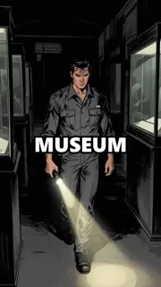
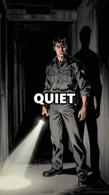
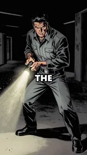
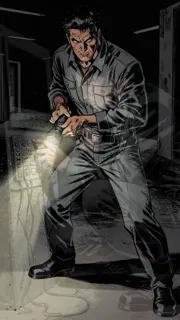
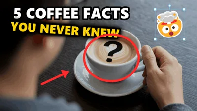
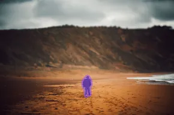
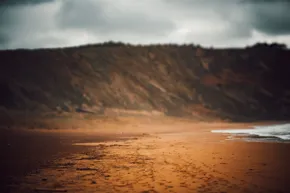

How to make your first video.
Try it right here: make a picture story in a copy of the app, then click around on your own.
The demo is easiest on a computer: on a phone the app copy is very small.
Good evening
1 video this week, last one 2 days ago.
Continue where you left off

The guard walks the quiet museum halls…
Made 2 days ago
Get started
Add a free footage key
Make your first video
Make a Windows tip video
Change a video with “Say what to change”
What this app can do
Make new video
From text: paste it or describe your video
An article, a tip, a story, notes. The app writes the script, finds the pictures, reads it out and adds captions.
Making your video
- Writing the story
- Drawing the pictures
- Reading it out
- Captions and music
- Saving the MP4



✓ Your video is ready
Shape
Voice
Length
AI picture look
Style
Music

The log shows each step as the video is made: the script, every clip and picture, the voice, the captions and the time it took.
My videos
Dashboard
Videos per week
Setup
Footage key
Smart writer
AI pictures
My voice
Thumbnails
Image editor


Pexels key
One free footage key is enough. Kept in Windows Credential Manager, on this PC only.
Pixabay key
Works on its own, or together with Pexels: the best clip wins.
Where videos are saved
Your Videos folder, with the captions (.srt), the thumbnail and the credits next to each video.
Voices
20 voices that work offline. My voice: record six sentences and your videos are read in a voice like yours.
Smart writer
Writes the script on your PC, offline. It can also look at your photos and screenshots.
AI pictures, made on this PC
For the scenes stock footage can't show. No key needed.
Updates in the app
A new version downloads and installs from inside the app. What's new shows on Home after each update.
Report a problem
Writes a report you can send yourself. Nothing is sent without you.
Open the log
A local file with what the app did, for when something goes wrong.
The video on the right was made by this feature.
Try the app right here
The full tour takes about 5 minutes: it walks you through everything the app can do, in 8 short parts. You can skip it any time.
Nothing to install. The pictures and videos are real; the waiting is sped up.
The steps
Install it
Download the installer (90 MB) and open it. Windows warns you the first time because the app is new: click More info, then Run anyway.
Open the app
No account and no sign-up. The first start shows you how to get a free Pexels or Pixabay key for stock footage; picture stories don’t need one.
Write your idea
In From text, pick a template and a style, then write the idea in detail: who, what, why.
Make it
Tick Make it straight away to go straight to the video, or open it in the Storyboard first to change any scene.
Watch and share
The app writes the story, draws the pictures, reads it out and adds captions and music. You get an MP4 ready for Shorts, TikTok or YouTube.
Ready to try it?
Free and open source, for Windows 10 and 11. Everything runs on your PC.